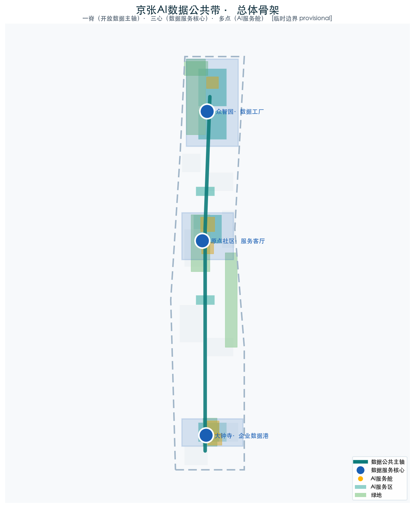
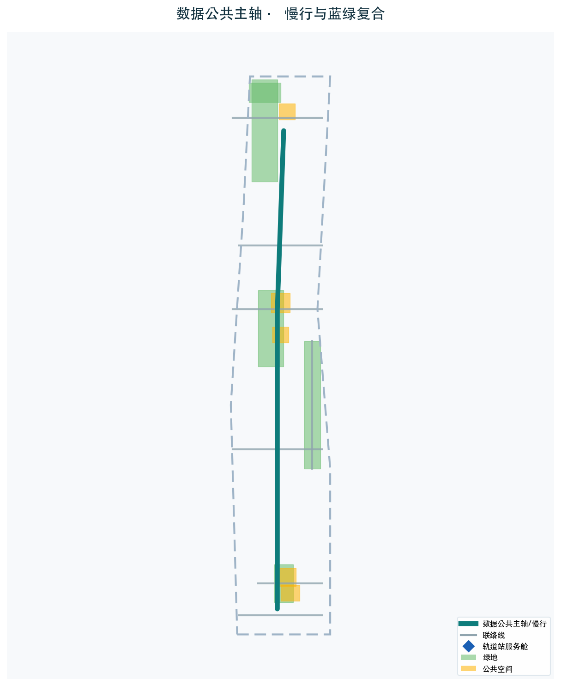
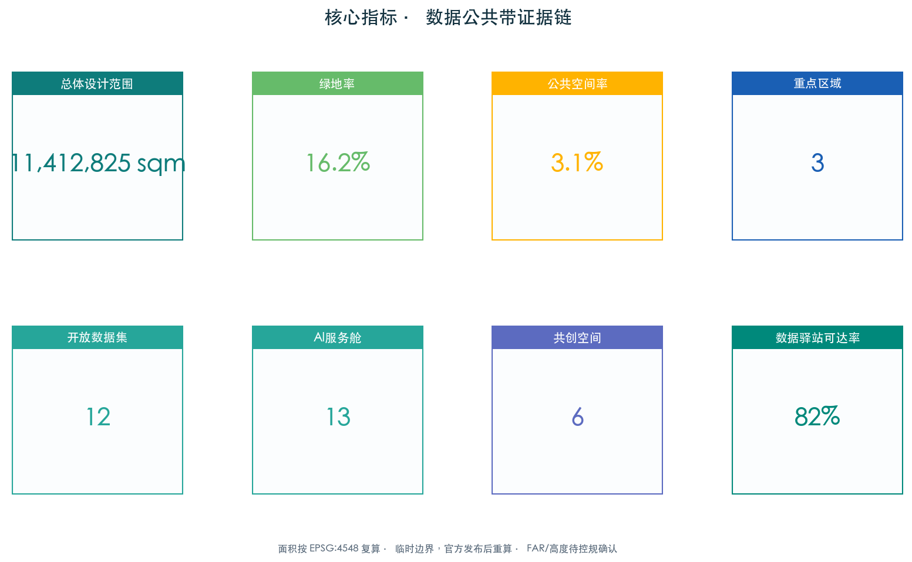

统筹研究范围 43.6km²
区域数据公共网络：政务、城市运行、产业、公共服务数据组织为沿京张走廊流动的数据主轴。
- 开放数据目录
- 区域协同网络
- 全球案例对标
人人共创的AI服务型城市脊梁。一脊（开放数据公共主轴）、三心（众智园数据工厂、AI原点社区服务客厅、大钟寺企业数据港）、多点（市民可参与的AI服务舱）。公共数据沿带开放，市民与开发者在共创节点上开发AI服务。本页为离线展示，权威数据以 GeoJSON、metrics.json 和自检结果为准。
数据公共主轴沿京张遗址公园绿带贯通南北，串联三个数据服务核心，AI服务舱沿轨道站点与社区分布。本图由同一组 GeoJSON / metrics 派生。
统筹研究范围构建区域数据网，总体设计范围落实走廊数据脊，重点区域范围落地三个服务心。数据像绿地和慢行一样成为人人可用的城市基础设施。
区域数据公共网络：政务、城市运行、产业、公共服务数据组织为沿京张走廊流动的数据主轴。
走廊数据脊：一脊三心多点，光纤+算力+慢行三合一基础设施，控规深度城市设计。
三个数据服务心：生产（众智园）、服务（原点社区）、产业（大钟寺）差异化落地。
三处重点区各自承担生产、服务、产业的差异化数据服务角色，每个都有功能业态、建筑规模、AI场景和实施风险。
约192公顷。生产侧核心：公共数据汇聚清洗开放、开发者黑客松、数据安全与AI伦理治理展示。
约104公顷。服务侧核心：一站式AI公共服务大厅、邻里数据驿站、市民共创成果发布厅。
约72公顷。产业侧核心：数据要素流通合规服务、国际路演客厅、智能消费体验中心。
用地共18个分区，承载数据共用心、服务舱和共创中心的地块标注为AI服务功能用地（设计建议）。绿地率25.6%，公共空间率20.9%。


数据公共主轴与慢行主轴共线，串联8个轨道站点服务舱；道路微循环缝合北五环跨环路断点、五道口和清华东路西口接驳节点。


京张遗址公园活力带布局5个数据驿站，蓝绿空间同时承载雨洪、生态、步行骑行和AI展示；3个AI朝圣地标（数据灯塔、共创之环、市民AI广场）作为辨识符号。
众智园。开放的实时数据可视化塔，展示京张走廊公共数据流动。
AI原点社区。市民共创成果环形展示空间，每周更新市民开发的AI服务。
大钟寺。开放的AI体验广场，市民可现场试用并反馈公共服务。
15栋概念建筑：3个数据服务核心、3个共创中心/发布厅、6个AI服务舱站点群和3个配套建筑。更新策略遵循保留-改造-激活，拆改留为概念建议。
众智园数据工厂、原点社区服务客厅、大钟寺企业数据港，承担数据汇聚、市民服务、企业服务。
开发者共创中心、标准治理展示区、开源发布厅，支撑市民与开发者共创。
沿轨道站点布局，形成500米步行可达的服务网络。
12张场景卡覆盖健康导航、政务通办、教育辅助、企业服务、文化导览、安全治理等，SC-06/08/11为AI产业测试验证场景，均须人工复核，遵循数据最小化。
原点社区服务舱。健康数据本人授权。
市民服务客厅。政务数据按目录开放。
近校成果转化街。学习数据脱敏。
企业数据服务港。商业数据保密。
京张铁路记忆长廊。无个人数据采集。
众智园。测试数据隔离、人工复核。
长者友好服务舱。语音数据本地处理。
公共体验节点。沙箱隔离、伦理审查。
大钟寺体验中心。消费偏好脱敏。
慢行主轴服务舱。位置数据匿名化。
三区公共空间。人工复核、可解释告警。
治理反馈环。公共数据开放可审计。
空间指标可由GeoJSON复算，管控指标待官方控规，绩效指标待运营数据。面积按EPSG:4548复算，临时边界待官方发布后重算。

容积率/建筑高度因控规缺失为 unknown，待正式数据确认。
compliance_matrix.json 覆盖公告 1.3、1.4、1.5 与 agent.1-agent.6；数据安全与隐私遵循《数据安全法》《个人信息保护法》《生成式AI服务管理暂行办法》。本页不加载 CDN、远程地图瓦片、外部脚本、外部字体、API 或 iframe。
公告、任务书、临时边界、数据安全法、个人信息保护法、公共数据开放试点通知、北京数字经济条例、全球数据公共案例。
控规条件、开放数据目录、授权流程、临时边界须官方确认；AI决策人工复核留痕，敏感数据沙箱隔离。